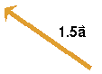
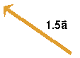

. When this vector is multiplied by the scalar 1.5,
one obtains the vector 1.5 shown to
the right of vector .
. When this vector is multiplied by the scalar 1.5,
one obtains the vector 1.5 shown to
the right of vector .
Vectors can be multiplied by scalars. The result is again a
vector. E.g., the diagram below shows a vector . When this vector is multiplied by the scalar 1.5,
one obtains the vector 1.5 shown to
the right of vector .
 

The vector 1.5 points in the same
direction as the vector , but its
magnitude is 1.5 times that of .
Dividing a vector by a scalar is defined as multiplying the
vector by the reciprocal of the scalar. E.g., /0.667 = 1.5 because
1/0.667 = 1.5.